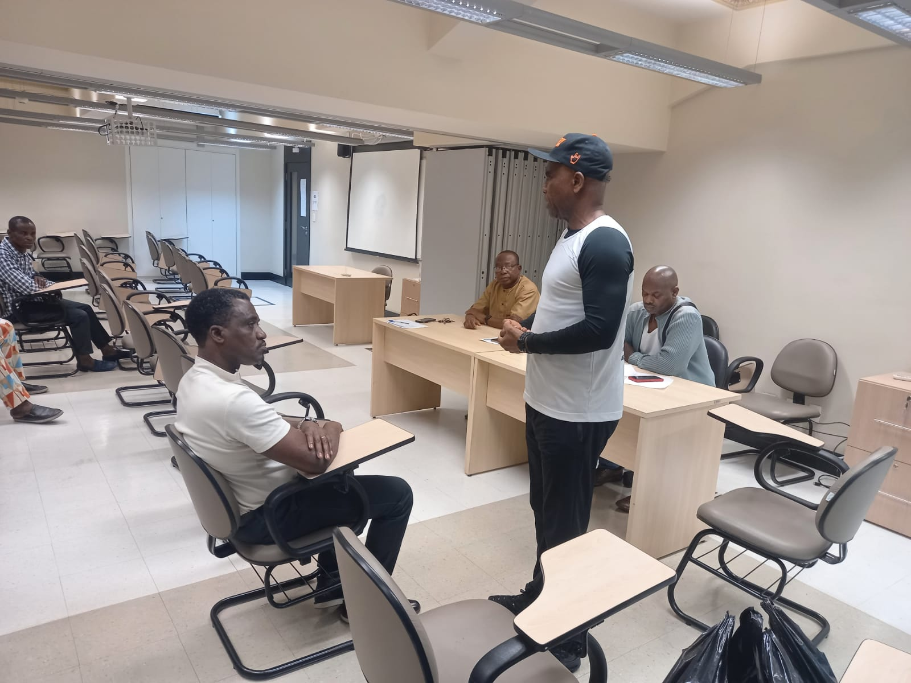

About Us
The Nigerian Community in Brazil-NICOM (Communidade Unificada
Nigeriana No Brasil) is an off-short of the defunct Student Union
which was formed by Group of Nigerian Students who came from Nigeria
to study at the University of São Paulo (USP) and other universities
in Brazil. The first President of the Student Union was Dr. Lawrence
Ifidon (1977-1983). After the Student Union came to an end; members
of the Union and other Nigerians decided that it was high time to
form an encompassing Organization consisting of Nigerians from all
works of life residing in Brazil.
A Constitution Committee was put in place (1986) and the members of
the Committee elaborated a Constitution which was promulgated to
guide the conduct of intending members. Under the auspices of His
Excellency; Mr. Muntari Abdu Kaita, Consul General of the Consulate
General in São Paulo, a reviewed edition of the constitution of
NICOM was promulgated on the 12 of March 2015. The Constitution
review committee was chaired by late Chief Eric lyke Agoha. The
review had the intuition of rendering the Constitution more
representative in promoting a better balance of power or equity
between the office of President and other members of Executive.

The supremacy of the Constitution was declared as sacrosanct, the
Association was formed as a membership Organization and none profit
oriented body. The first democratic elected President of the
Nigerian Community in Brazil was Mr. Lawrence Balogun. At the end of
his tenure, a caretaker Committee was instituted led by Mr. Joseph
Ozugbo, he later conducted another democratic election which
swore-in Mr. Beruck C. Nwabasili, his administration lasted for
almost 9 years (1999-2008) (nine). Another election was conducted,
this time Mr. Theodore C. Nwaike began his Presidency which lasted
for almost 7 years (seven) (2008-2015) A third Democratic election
was held on the 11 of July 2015.
Dr. Emmanuel O.T Oluwatuyi was sworn-in as President of NICOM. His
was sworn on the 1" of August 2015 and his tenure is still in
progress for reasons what would be mentioned in the course of this
Report. On the 13th of October 2018 a 7 member Committee was
inaugurated by the President. They were given the mandate to
organize and supervise a new Presidential election process that will
usher a new dispensation of the Nigerian Community EXCO in Brazil.
 00.01.51_55ca88ea.jpg)